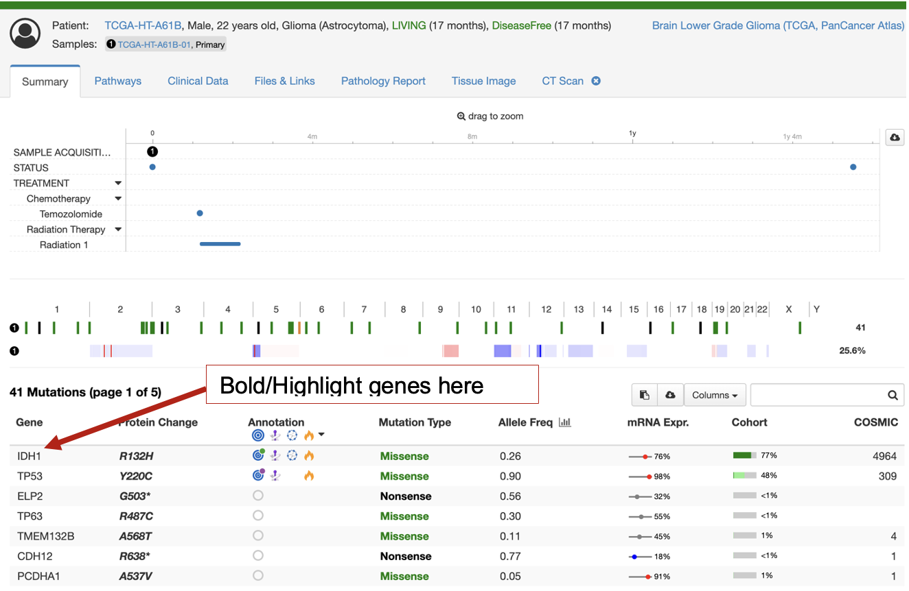

AI가 암마다 “중요한 유전자”를 찾아 목록을 만들고,
또 다른 AI가 진짜 논문으로 그걸 채점하는 이야기.
📍 이 저장소 OncoTree2Genes-LLM이 하는 일을, 그림으로 쉽게.
전 세계 연구자들은 cBioPortal이라는 웹사이트에서 암 유전체 데이터를 탐색합니다. 그런데 “이 암에서 먼저 봐야 할 핵심 유전자가 뭐지?”에 대한 기본 추천 목록이 없었어요.
OncoTree는 메모리얼 슬론케터링 암센터(MSK)가 만든 암 분류 나무(온톨로지)입니다.
암마다 짧은 코드가 붙어요 — BRCA(유방암), PAAD(췌장암), DSRCT(희귀 소아암)…
assets/oncotree_latest_stable_*.json).
바로 이 891개 각각에 “추천 유전자 목록”을 붙여주는 게 목표.AI(구글 Gemini)에게 정해진 형식으로 물어봅니다. 그냥 “유전자 이름”만이 아니라 — 연관 강도, 변이 종류, 유전/후천성 여부, 진단적 의미, 치료 연관성까지 구조화된 표(JSON)로 받아요.
코드는 세 가지를 각각 생성합니다: ① 유전자 목록(암당 최대 50개, 강한 순 정렬) ② 경로(pathway) 연관 여부(TP53·WNT·MYC·PI3K 등) ③ 분자 아형(molecular subtype).
프롬프트는 “당신은 임상 암유전학 전문가”라고 역할을 주고, PubMed·ClinGen·OMIM·COSMIC 같은 근거에 기반해 엄격한 JSON으로만 답하게 합니다.
창의성(temperature)은 0.25로 낮게 — 상상보다 사실에 가깝게.
(파일: generate_lists/llm_mine_gene_pathway_assoc_oncotree.py)
거대 언어모델의 약점: 환각(hallucination). 자신 있게 틀린 유전자를 목록에 끼워 넣을 수 있습니다. 임상·연구에 쓰일 목록이라면 이건 치명적이죠.
0.25 — 사실 위주.0.0 — 엄격하게. 근거 있으면 VALID, 없으면 NOT VALID.저장소의 실제 검증 결과(validate_genes_pathways_in_references.json)에서 가져온 진짜 예시입니다.
DSRCT는 아이들에게 생기는 희귀 육종이에요.
EWSR1생성 AI가 1순위로 지목 → 검증 AI가 PubMed 논문 5편으로 확인.
실제로 DSRCT의 표지자는 EWSR1–WT1 융합 — AI가 제대로 짚었습니다.
rb_pathway생성 AI는 관련 있다고 했지만, 검증 AI가 초록에서 근거를 못 찾음.
→ 최종 목록에서 탈락. 이렇게 근거 없는 항목이 걸러집니다.
EWSR1, WT1, TP53, MYC …
❌ 탈락: 일부 경로 · “확립된 분자아형 없음” 항목. — 모든 판정마다 한 줄 이유와 PMID가 기록됩니다.검증을 통과한 유전자들은 cBioPortal 화면에서 먼저, 눈에 띄게 표시됩니다. 연구자는 그 암에 정말 중요한 변이부터 보게 되죠.

▲ 저장소에 포함된 실제 화면 예시 — 질병별 관련 유전자가 상단에 우선 노출.
gene_pathway_lists/complete_export_lists.json.한 AI의 말만 믿지 않고, 서로 다른 근거로 교차 검증해 통과한 것만 신뢰하는 방식. 이는 우리 팀의 LLM Jury(여러 AI가 서로 판정) 철학, 그리고 지식그래프+문헌을 잇는 mAb-GATED 방향과 정확히 맞닿아 있습니다.
llm_mine_gene_pathway_assoc_oncotree.py, merge_export_lists.py).mmc1.xlsx.index.html).실행은 두 줄로 요약돼요:
① run_llm_generate_lists.sh 로 목록 생성 → ② run_validate_gene_pathway_subtype_lists.sh 로 문헌 검증.
(Google Gemini API 키와 NCBI API 키 필요.)